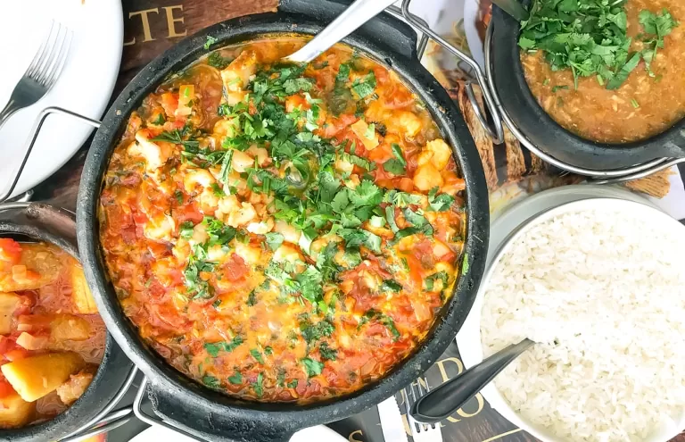
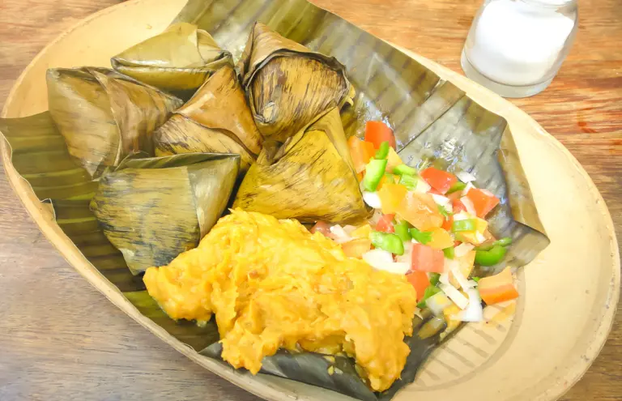
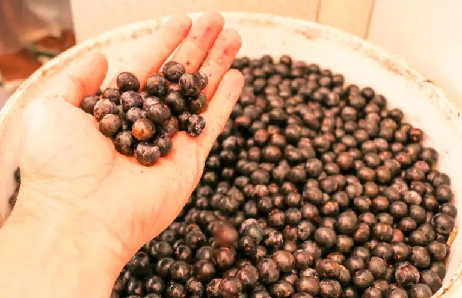
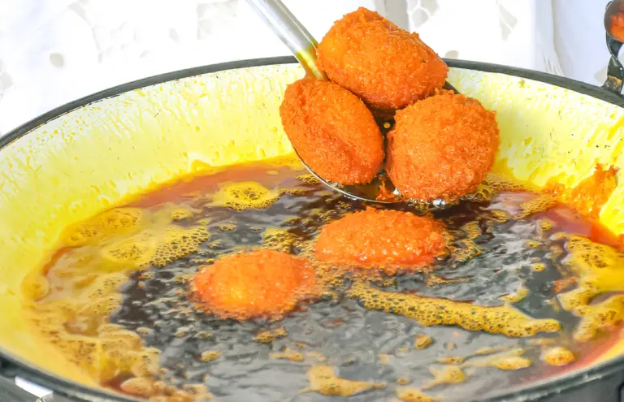

100 comidas típicas do Brasil para experimentar nas viagens pelo país
Toda viagem se completa à mesa. Andamos por lugares incríveis, encontramos pessoas novas e aprendemos muita coisa sobre o lugar, mas é quando nos sentamos para comer que tudo fica – literalmente – mais gostoso. Por isso, eu fiz esta lista – uma lista enorme – com as comidas típicas do Brasil para você ter uma ideia do que a gente encontra em nosso país.
Há sabores para todos os gostos, e um conselho que dou é se abrir para experimentar pratos novos e até mesmo aqueles que não conquistarem sua simpatia logo de cara. Não custa nada tentar e você ainda pode ter uma ótima surpresa.
Eu falo isso por experiência própria, porque já perdi a conta de quantas vezes me surpreendi com pratos que eu não dava a mínima importância, mas que, depois, viraram meus favoritos.
Ah! Acho bom se preparar, porque depois de ver toda a lista, você vai ficar com muita fome.
100 comidas típicas do Brasil
1.ABARÁ
O abará é um bolinho de feijão típico da Bahia. É a mesma massa do acarajé, só que o abará não é frito. Ele é cozido embrulhado em folha de bananeira e, geralmente, é servido com recheio de vatapá e caruru. A receita, de origem africana, faz parte da comida ritual do candomblé.
AÇAI DO PARÁ
O açaí é o fruto de uma palmeira muito comum na região amazônica, mas foi a partir do Pará ele ganhou o mundo. Eu digo isso porque a gente já consegue comprar açaí em vários países, como Portugal, por exemplo. Originalmente, o açaí é servido fresco, – feito no mesmo dia – e poder ser acompanhado de farinha de mandioca ou tapioca.
ACARAJÉ
Não dá para viajar pela Bahia e não comer acarajé, o prato mais típico do Estado. Vendido pelas tradicionalíssimas baianas vestidas de branco, esse bolinho de feijão frito no azeite de dendê é uma das iguarias brasileiras mais famosas no exterior: os gringos adoram.
ARROZ CARRETEIRO
O arroz carreteiro surgiu nos pampas do Rio Grande do Sul. Para suportarem as longas distâncias, os gaúchos preparavam uma mistura de arroz e charque – semelhante à carne seca -, ingredientes que resistiam aos longos dias de viagem.
ARROZ COM PEQUI
Dez em cada dez goianos amam pequi. O fruto, que tem um gosto marcante e esconde perigosos espinhos no miolo, é controverso para quem não é “do Goiás“. Mas, não há como negar que o arroz com pequi reina absoluto na mesa dos goianos.